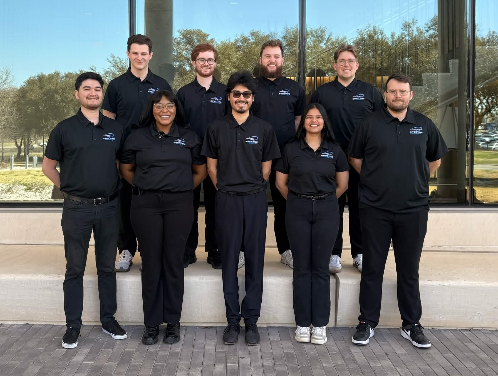
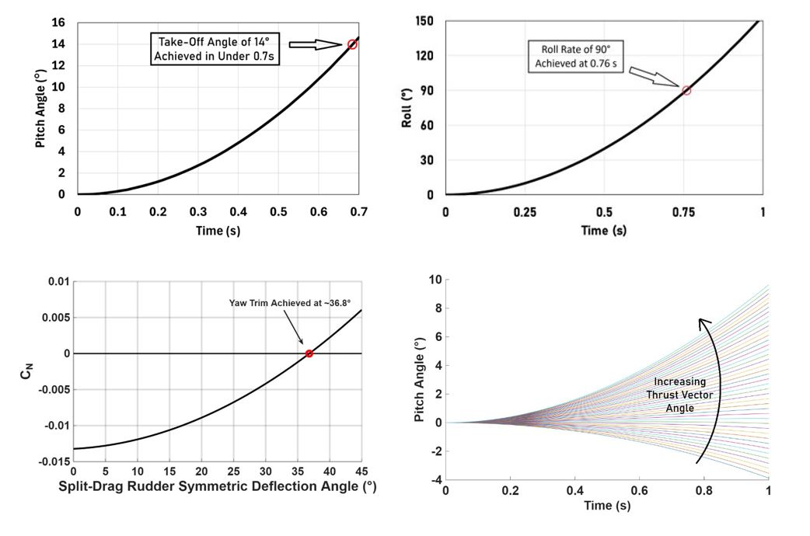
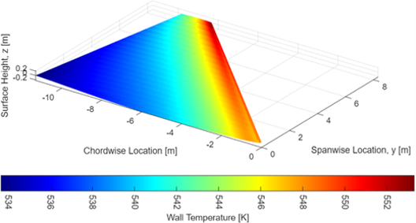

Senior Design Projects
Senior Design 2 focused on the conceptual design of a Mach 3 fighter aircraft. My primary contributions centered on stability and control analysis, with additional emphasis on thermal modeling for high-speed flight and aerodynamic heating.

Senior Design 2 team for the Mach 3 fighter aircraft concept.
Project Overview
My Senior Design 2 project focused on the conceptual design of a Mach 3 fighter aircraft. The project required integrating multiple aerospace disciplines into a single aircraft concept while balancing performance, stability, control effectiveness, structural considerations, and thermal constraints associated with sustained high-speed flight.
My main role was in stability and control, where I helped develop methods to evaluate the aircraft’s static stability, control authority, and moment behavior. I also contributed thermal analysis work to estimate temperature distributions over lifting surfaces during Mach 3 cruise conditions, helping assess how aerodynamic heating would influence the design.
Course Outcome and Team Performance
Course Results
- Received an A grade in the senior design course
- Received a 95 on the midterm report
- Received a 95 on the final report
- Completed major written and presentation deliverables for a full conceptual aircraft design project
Team Competition Format
- The senior design class was split into two separate competing teams
- Both teams were assigned the same Mach 3 fighter design requirements
- Our team developed a competing fighter concept under the same mission and design constraints
- Our team scored higher in presentations than the competing team
My Role
I served primarily in a stability and control role, developing and applying methods to analyze aircraft moment behavior, static stability characteristics, trim-related considerations, and control effectiveness. This work involved building engineering methods, implementing calculations in MATLAB, and interpreting the resulting plots to help guide design decisions.
In addition to stability and control, I worked on thermal analysis to evaluate wing temperature distribution during high-speed flight. This portion of the work focused on estimating how aerodynamic heating varied across the wing and how temperature behavior could be visualized and interpreted as part of the broader aircraft design process.
Technical Approach
The senior design project used a conceptual design process in which geometry, mission requirements, and disciplinary analyses informed one another. For stability and control, my work focused on how the aircraft configuration influenced pitch behavior, static margin, control authority, and general controllability across the design process.
I developed and used analytical methods and MATLAB tools to study moment behavior and stability trends. This included evaluating the effects of geometry, control surfaces, and configuration choices on the aircraft’s ability to remain stable and controllable. The goal was not only to compute values, but also to interpret what those values meant for the feasibility of the design.
For the aerothermal portion of the project, I analyzed temperature distribution over a wing surface at Mach 3 cruise conditions. This thermal work helped highlight how high-speed flight introduces important heating considerations that must be taken into account when evaluating the suitability of a conceptual aircraft configuration.
Stability and Control Focus
- Evaluated static stability behavior of the aircraft concept
- Studied pitch moment trends and control effectiveness
- Examined trim-related behavior and design implications
- Used plotted results to compare stability characteristics
- Supported design decisions with MATLAB-based analysis
Thermal Analysis Focus
- Analyzed wing temperature distribution for Mach 3 cruise flight
- Estimated aerodynamic heating effects over the wing surface
- Visualized temperature behavior using 3D distribution plots
- Connected thermal results to high-speed design considerations
- Supported multidisciplinary understanding of the aircraft concept
Stability and Control Results
One of the key goals of the stability and control team was to determine whether the aircraft concept could achieve minimum maneuverability requirements. To evaluate this, I worked with MATLAB-based analysis functions that calculated the vehicle’s roll, pitch, and yaw moment coefficients using flight conditions, vehicle geometry, and control deflection angles as inputs.
Those moment coefficients were then used with the rotational equations of motion to obtain the vehicle’s angular rates and angular accelerations. This process used the aircraft’s inertia tensor and center of gravity to connect aerodynamic control inputs to the resulting rotational motion of the vehicle.
The resulting stability and control plots helped visualize how the aircraft responded to control inputs and whether the concept had the maneuverability and controllability characteristics needed for the intended Mach 3 fighter mission.

Combined stability and control plots used to evaluate maneuverability, control response, and rotational behavior of the Mach 3 fighter concept.
Thermal Analysis Visualization
In addition to the stability and control work, I also developed and interpreted thermal results for the aircraft wing. This work focused on understanding how temperature varied across the surface during Mach 3 cruise and how aerodynamic heating could become an important design driver.

3D wing temperature distribution showing thermal behavior during Mach 3 cruise conditions.
Skills Used and Developed
Technical Skills
- Aircraft stability and control analysis
- Roll, pitch, and yaw moment coefficient modeling
- Rotational equations of motion
- MATLAB modeling and plotting
- Aerothermal analysis
- 3D data visualization
- Conceptual aircraft design
Engineering Skills
- Multidisciplinary design thinking
- Interpretation of technical results
- Problem decomposition
- Design trade evaluation
- Technical communication
- Team-based project collaboration
Selected Contributions
This project demonstrates my ability to contribute meaningfully to a complex aerospace design effort through both analysis and interpretation. My work supported the team’s understanding of how the aircraft concept performed from a stability and control perspective, while also adding thermal analysis relevant to high-speed flight.
Stability and Control Contributions
- Developed analysis methods for aircraft stability and control evaluation
- Generated plots to study maneuverability, stability behavior, and control effectiveness
- Connected moment coefficient calculations to rotational equations of motion
- Interpreted results to support conceptual design decisions
- Contributed to the overall understanding of vehicle controllability
Thermal Contributions
- Analyzed heating behavior for a Mach 3 wing configuration
- Produced thermal visualizations for design interpretation
- Connected aerodynamic heating results to the aircraft concept
- Helped broaden the project’s multidisciplinary analysis depth
What I Learned
This project taught me that high-speed aircraft design depends on the interaction between many disciplines. Stability and control cannot be treated in isolation, because configuration decisions also affect aerodynamics, thermal behavior, and overall vehicle feasibility.
I also strengthened my ability to turn analysis into design insight. Rather than simply producing plots, I learned how to interpret them, explain what they meant for the aircraft concept, and use them to support engineering decisions within a team environment.
Future Improvements
Future work could include expanding the stability and control analysis to cover additional flight conditions, improving control surface trade studies, refining thermal modeling fidelity, and integrating the results more deeply with other aircraft design disciplines. I would also like to continue improving how complex technical results are visualized and communicated.